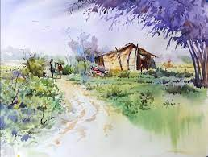
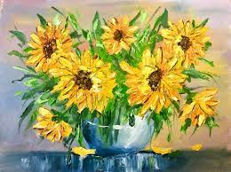
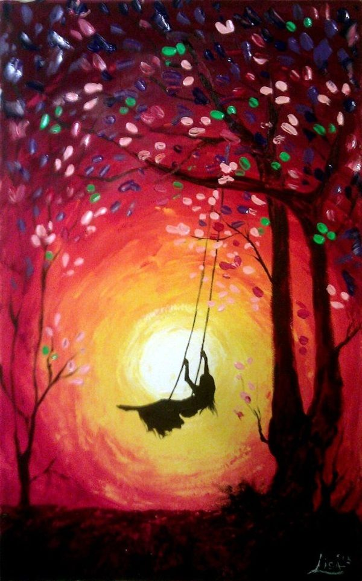
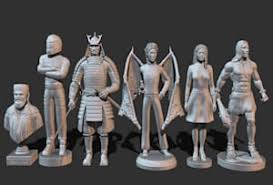
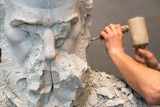
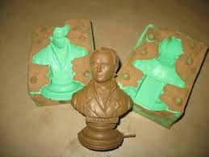
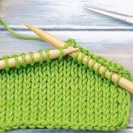
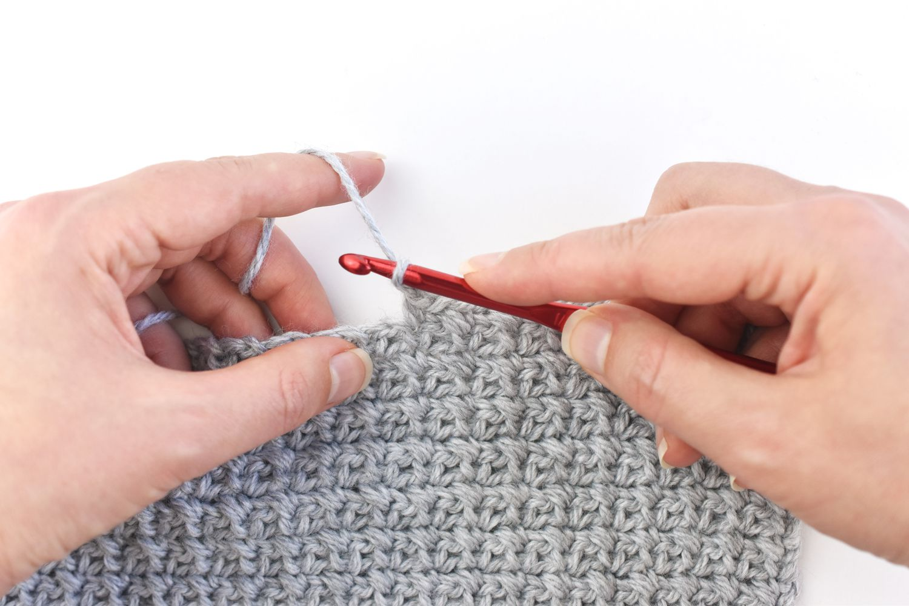

The Ultimate Art
For people who are inspired to to ART
Arts and Crafts
Art is something that squeezes the creativity out from oneself. Arts and crafts describes a wide variety of activities involving making things with one's own hands. Arts and crafts is usually a hobby. Some crafts (art skills) have been practised since preshistoric times, others are more recent inventions. William Morris, John Ruskin and others promoted an "arts and crafts" movement in the late 19th century, which popularized the phrase.
Both children and adults enjoy arts and crafts. Children in schools may learn skills such as woodworking, wood carving, sewing, or making things with all sorts of material. Many community centres have evening or day classes and workshops where one can learn arts and craft skills
Origami
Origami (折り紙, Japanese pronunciation: [oɾigami] or [oɾiꜜgami], from ori meaning "folding", and kami meaning "paper" (kami changes to gami due to rendaku)) is the art of paper folding, which is often associated with Japanese culture. In modern usage, the word "origami" is used as an inclusive term for all folding practices, regardless of their culture of origin. The goal is to transform a flat square sheet of paper into a finished sculpture through folding and sculpting techniques. Modern origami practitioners generally discourage the use of cuts, glue, or markings on the paper. Origami folders often use the Japanese word kirigami to refer to designs which use cuts.
Basic Folds:
Some origami creations:
Origami CraneOrigami Dragon
Many more Origami creations

Painting
Painting, the expression of ideas and emotions, with the creation of certain aesthetic qualities, in a two-dimensional visual language. The elements of this language—its shapes, lines, colours, tones, and textures—are used in various ways to produce sensations of volume, space, movement, and light on a flat surface. These elements are combined into expressive patterns in order to represent real or supernatural phenomena, to interpret a narrative theme, or to create wholly abstract visual relationships.
Acrylic PaintingWatercolor Painting
Oil Painting
Gouache Painting
And More
  
Sculping
Sculpture is the branch of the visual arts that operates in three dimensions. Sculpture is the three-dimensional art work which is physically presented in the dimensions of height, width and depth. It is one of the plastic arts. Durable sculptural processes originally used carving (the removal of material) and modelling (the addition of material, as clay), in stone, metal, ceramics, wood and other materials but, since Modernism, there has been an almost complete freedom of materials and process. A wide variety of materials may be worked by removal such as carving, assembled by welding or modelling, or moulded or cast.
Stone CarvingClay modelling
Casting
  
Knitting/Crochet
Knitting is a method by which yarn is manipulated to create a textile, or fabric. It is used to create many types of garments. Knitting may be done by hand or by machine. Knitting creates stitches: loops of yarn in a row, either flat or in the round (tubular). There are usually many active stitches on the knitting needle at one time. Knitted fabric consists of a number of consecutive rows of connected loops that intermesh with the next and previous rows. As each row is formed, each newly created loop is pulled through one or more loops from the prior row and placed on the gaining needle so that the loops from the prior row can be pulled off the other needle without unraveling.
Crochet (English: /kroʊˈʃeɪ/;[1] French: [kʁɔʃɛ][2]) is a process of creating textiles by using a crochet hook to interlock loops of yarn, thread, or strands of other materials.[3] The name is derived from the French term crochet, meaning 'hook'. Hooks can be made from a variety of materials, such as metal, wood, bamboo, or plastic. The key difference between crochet and knitting, beyond the implements used for their production, is that each stitch in crochet is completed before the next one is begun, while knitting keeps many stitches open at a time. Some variant forms of crochet, such as Tunisian crochet and broomstick lace, do keep multiple crochet stitches open at a time.
KnittingCrochet
 